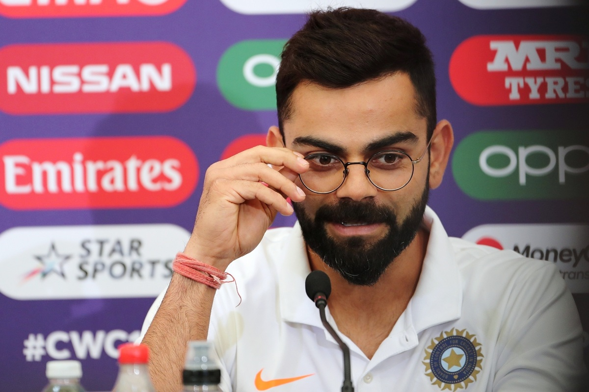
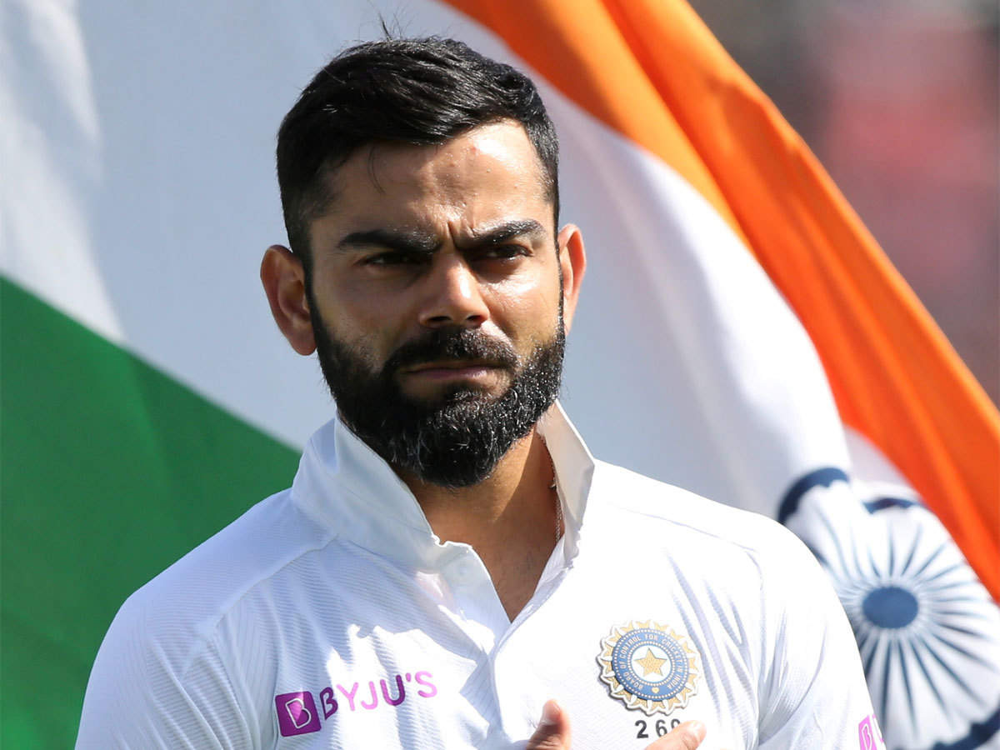

Virat Kohli (Hindustani: [ʋɪˈraːʈ ˈkoːɦliː] (About this soundlisten); born 5 November 1988) is an Indian cricketer and the current captain of the India national team. A right-handed top-order batsman, Kohli is regarded as one of the best contemporary batsmen in the world.[3] He plays for Delhi in domestic cricket and for Royal Challengers Bangalore in the Indian Premier League (IPL) as captain of the franchise since 2013.
Kohli captained India Under-19s to victory at the 2008 Under-19
World Cup in Malaysia. After a few months later, he made his ODI debut for India against Sri Lanka at the age of 19. Initially having played as a reserve batsman in the Indian team, he soon established himself as a regular in the ODI middle-order and was part of the squad that won the 2011 World Cup. He made his Test debut in 2011 and shrugged off the tag of "ODI specialist" by 2013 with Test hundreds in Australia and South Africa.[4] Having reached the number one spot in the ICC rankings for ODI batsmen for the first time in 2013,[5] Kohli also found success in the Twenty20 format, winning the Man of the Tournament twice at the ICC World Twenty20 (in 2014 and 2016).
Kohli was appointed the vice-captain of the ODI team in 2012 and handed over the Test captaincy following Mahendra Singh Dhoni's Test retirement in 2014. In early 2017, he became the limited-overs captain as well after Dhoni stepped down from the position. In ODIs, Kohli has the second highest number of centuries and the highest number of centuries in run-chases in the world. He holds the world record for being the fastest batsman to 8,000, 9,000, 10,000, 11,000 and 12,000 runs in ODI cricket. Among Indian batsmen, Kohli has the best ever Test rating (937 points), ODI rating (911 points) and T20I rating (897 points).
Kohli has been the recipient of many awards such as the Sir Garfield Sobers Trophy (ICC Cricketer of the Year) in 2017 and 2018; ICC Test Player of the Year 2018; ICC ODI Player of the Year in 2012, 2017 and 2018 and Wisden Leading Cricketer in the World in 2016, 2017 and 2018.[6] He was given the Arjuna Award in 2013, the Padma Shri under the sports category in 2017[7] and the Rajiv Gandhi Khel Ratna, the highest sporting honour in India, in 2018.[8] Kohli is ranked as one of the world's most famous athletes by ESPN[9] and one of the most valuable athlete brands by Forbes.[10] In 2018, Time magazine named Kohli one of the 100 most influential people in the world.[11] In 2020, Kohli was ranked 66th in Forbes list of the top 100 highest paid athletes in the world for the year 2020 with estimated earnings of $26 million.[12]
On 22 April 2021, against Rajasthan Royals, Kohli became the first ever player in the IPL to score 6000 IPL runs.
Virat Kohli was born on 5 November 1988 in Delhi into a Punjabi Hindu family.[14] His father, Prem Kohli, worked as a criminal lawyer and his mother, Saroj Kohli, is a housewife He has an older brother, Vikas, and an older sister, Bhavna.[16] According to his family, when he was three-years old, Kohli would pick up a cricket bat, start swinging it and ask his father to bowl at him.[17]
Kohli was raised in Uttam Nagar[18] and started his schooling at Vishal Bharti Public School. In 1998, the West Delhi Cricket Academy was created and a nine-year-old Kohli was part of its first intake.
Kohli's father took him to the academy after their neighbours suggested that "Virat shouldn't waste his time in gully cricket and instead join a professional club".[15] Kohli trained at the academy under Rajkumar Sharma and also played matches at the Sumeet Dogra Academy at Vasundhara Enclave at the same time.
Sharma recounts Kohli's early days at his academy, "He oozed talent. It was so difficult to keep him quiet. He was a natural in whatever he did and I was most impressed with his attitude. He was ready to bat at any spot, and I had to literally push him home after the training sessions. He just wouldn’t leave."[19] In ninth grade, he shifted to Saviour Convent in Paschim Vihar to help his cricket practice.[15] Apart from sports, Kohli was good at academics as well, and his teachers remember him as "a bright and alert child".
Kohli's family lived in Meera Bagh until 2015 when they moved to Gurgaon
Kohli's father died on 18 December 2006 due to a stroke after being bed-ridden for a month Regarding his early life, Kohli has said in an interview, "I've seen a lot in life. Losing my father
at a young age, the family business not doing too well, staying in a rented place. There were tough times for the family... It's all embedded in my memory."[22] According to Kohli, his father supported his cricket training during his childhood, "My father was my biggest support. He was the one who drove me to practice every day. I miss his presence sometimes
Kohli first played for Delhi Under-15 team in October 2002 in the 2002–03 Polly Umrigar Trophy. He was the leading run-scorer for his team in that tournament with 172 runs at an average of
He became the captain of the team for the 2003–04 Polly Umrigar Trophy[25] and scored 390 runs in 5 innings at an average of 78 including two centuries and two fifties.[26] In late 2004, he was selected in the Delhi Under-17 team for the 2003–04 Vijay Merchant Trophy. He scored 470 runs in four matches at an average of 117.50 with two hundreds and top-score of 251*.[27] Delhi Under-17s won the 2004–05 Vijay Merchant Trophy in which Kohli finished as the highest run-scorer with 757 runs from 7 matches at an average of 84.11 with two centuries.[28] In February 2006, he made his List A debut for Delhi against Services but did not get to bat.[29]
In July 2006, Kohli was selected in the India Under-19 squad on its tour of England.
He averaged 105 in the three-match ODI series against England Under-19
and 49 in the three-match Test series.[31] India Under-19 went on to win both the series. At the conclusion of the tour, the India Under-19 coach Lalchand Rajput was impressed with Kohli and said, "Kohli showed strong technical skills against both pace and spin".[32] In September, the India Under-19 team toured Pakistan. Kohli averaged 58 in the Test series[33] and 41.66 in the ODI series against Pakistan Under-19s.[34]
"The way I approached the game changed that day. I just had one thing in my mind - that I have to play for my country and live that dream for my dad."
— Kohli on his innings against Karnataka
Kohli made his first-class debut for Delhi against Tamil Nadu in
November 2006, at the age of 18, and scored 10 in his debut innings. He came into the spotlight in December when he decided to play for his team against Karnataka on the day after his father's death and went on to score 90.[36] He went directly to the funeral after he was dismissed. Delhi captain Mithun Manhas said, "That is an act of great commitment to the team and his innings turned out to be crucial," while coach Chetan Chauhan lauded
Kohli's "attitude and determination."[37] His mother noted that "Virat changed a bit after that day. Overnight he became a much more matured person. He took every match seriously. He hated being on the bench. It's as if his life hinged totally on cricket after that day. Now, he looked like he was chasing his father's dream which was his own too."[15] He scored a total of 257 runs from 6 matches at an average of 36.71 in that season.[38]
In April 2007, he made his Twenty20 debut and finished as the highest run-getter for his team in the Inter-State T20 Championship with 179 runs at an average of 35.80.[39] In July–August 2007, the India Under-19 team toured Sri Lanka. In the triangular series against Sri Lanka Under-19s and Bangladesh Under-19s, Kohli was the second highest run-getter with 146 runs from 5 matches.[40] In the two-match Test series that followed, he scored 244 runs at an average of 122 including a hundred and a fifty.
In February–March 2008, Kohli captained the victorious Indian team at the 2008 ICC
Under-19 Cricket World Cup held in Malaysia. Batting at number 3, he scored 235 runs in 6 matches at an average of 47 and finished as the tournament's third-highest run-getter and one of the three batsmen to score a hundred in the tournament.[42] His century (100 runs from 74 balls) against the West Indies Under-19s in the group stage, which was called "the innings of the tournament" by ESPNcricinfo,[43] gave India a 50-run victory and earned Kohli the man of the match. Kohli picked up a leg injury during the match, but recovered in time to play the quarter-final match against England Under-19s.[44] He was instrumental in India's three-wicket semi-final win over New Zealand Under-19s in which he took 2/27 and scored 43 in the tense run-chase and was awarded the man of the match.[45] He scored 19 against South Africa Under-19s in the final which India won by 12 runs (D/L method). ESPNcricinfo commended him for making several tactical bowling changes during the tournament.
Following the Under-19 World Cup, Kohli was bought by the Indian Premier League franchise Royal Challengers Bangalore for $30,000 on a youth contract.[46] In June 2008, Kohli and his Under-19 teammates Pradeep Sangwan and Tanmay Srivastava were awarded the Border-Gavaskar scholarship. The scholarship allowed the three players to train for six weeks at Cricket Australia's Centre of Excellence in Brisbane.[42] In July 2008, he was included in India's 30-man probable squad for the ICC Champions Trophy which was to be held in Pakistan in September 2008.[47] He was also picked in the India Emerging Players squad for the four-team Emerging Players Tournament in Australia. He was in fine form in that tournament and scored 206 runs in six matches at an average
 In August 2008, Kohli was included in the Indian ODI squad for tour of Sri Lanka and the Champions Trophy in Pakistan
In August 2008, Kohli was included in the Indian ODI squad for tour of Sri Lanka and the Champions Trophy in PakistanWhen India toured the West Indies in June–July 2011, they chose a largely inexperienced squad, resting Tendulkar and others such as Gambhir and
Sehwag missing out due to injuries. Kohli was one of three uncapped players in the Test squad
Kohli found success in the ODI series which India won 3–2, with a total of 199 runs at an average of 39.80.
His best efforts came in the second ODI at Port of Spain where he won the man of the match for his score of 81 which gave India a seven-wicket victory,[91] and the fifth ODI at Kingston where his innings of 94 came in a seven-wicket defeat.[
Kohli made his Test debut at Kingston in the first match of the Test series that followed. He batted at 5 and was dismissed for 4 and 15 caught behind by Fidel Edwards in both innings
India went on to win the Test series 1–0 but Kohli amassed just 76 runs from five innings,[93] struggling against the short ball[94] and was particularly troubled by the fast bowling of Edwards, who dismissed him three times in the series.[95]
Initially dropped from the Test squad for India's four-match series in England in July and August, Kohli was
recalled as replacement for the injured Yuvraj
hough did not play in any match in the series. He found moderate success in the subsequent ODI series in which he averaged 38.80.
His score of 55 in the first ODI at Chester-le-Street was followed by a string of low scores in the next three matches.[51] In the last game of the series, Kohli scored his sixth ODI hundred–107 runs off 93 balls–and shared a 170-run third-wicket partnership with Rahul Dravid, who was playing his last ODI, to help India post their first 300-plus total of the tou
Kohli was dismissed hit wicket in that innings which was the only century in the series by any player on either team and earned him praise for his "hard work" and "maturity".[99] However, England won the match by D/L method and the series 3–0.
In October 2011, Kohli was the leading run-scorer of the five-match home ODI series against England which India won 5–0. He scored a total of 270 runs across five
matches including unbeaten knocks of 112 from 98 balls at Delhi, where he put on an unbroken 209-run partnership with Gambhir,
] and 86 at Mumbai, both in successful run-chases
Owing to his ODI success, Kohli was included, ahead of Raina, in the Test squad to face the West Indies in November. In competition with Yuvraj Singh for the number six position,[101] it was not until the final match of the series that Kohli was selected in the team.
He scored a pair of fifties in the match,[92] with his first innings score of 52 ensuring India avoided follow-on.
India won the subsequent ODI series 4–1 in which Kohli managed to accumulate 243 runs at 60.75.[103] During the series, Kohli scored his eighth ODI century and his second at Visakhapatnam, where he made 117 off 123 balls in India's run-chase of 271
a knock which raised his reputation as "an expert of the chase"
Kohli ended up as the leading run-getter in ODIs for the year 2011, with 1381 runs from 34 matches at 47.62 and four centuries
Having found a place in India's Test squad for the tour of Australia in December 2011,
Kohli top-scored with 132 in a tour match against Cricket Australia Chairman's XI to strengthen his case for a spot in the playing eleven ahead of Rohit Sharma.[107] Batting at number 6, Kohli failed to go past 25 in the first two Tests, as his defensive technique was exposed.
While fielding on the boundary during the second day of the second match, he gestured to the crowd with his middle finger for which he was fined 50% of his match fee by the match referee. He top-scored in each of India's innings in the third Test at Perth, with 44 and 75, even as India surrendered to their second consecutive innings defeat.
In the fourth and final match at Adelaide, Kohli scored his maiden Test century of 116 runs in the first innings; it was the only century scored by an Indian in the series.
India suffered a 0–4 whitewash and Kohli, India's top run-scorer in the series, was described as "the lone bright spot in an otherwise nightmare visit for the tourists".
Kohli fielding during a CB Series match against Australia in February 2012
In the first seven matches of the Commonwealth Bank triangular series against hosts Australia and Sri Lanka, Kohli made two fifties–77 at Perth and 66 at Brisbane–both against Sri Lanka.[51] India registered two wins, a tie and four losses in these seven matches, which meant that they needed a bonus point win their last group match against Sri Lanka at Hobart, to stay in contention for qualifying for the finals series.[112] Being set a target of 321 by Sri Lanka, Kohli came to the crease with India's score at 86/2 and went on to score 133 not out from 86 balls to take India to a comfortable win with 13 overs to spare.[113] India earned a bonus point with the win and Kohli was named Man of the Match for his knock, which included scoring 24 runs in an over by Lasith Malinga.[114] Former Australian cricketer and commentator Dean Jones rated Kohli's innings as "one of the greatest ODI knocks of all time".[115] However, Sri Lanka
beat Australia three days later in their last group fixture and knocked India out of the series.[116] With 373 runs at 53.28, Kohli once again finished as India's highest run-scorer and lone centurion of the series.[117]

Kohli was appointed the vice-captain for the 2012 Asia Cup in Bangladesh on the back of his fine performance in Australia. Kris Srikkanth, the chairman of selectors, told reporters, "Hats off to Virat Kohli for the way he played. We have to start looking towards the future. The selection committee and the Board felt Kohli is future captaincy material."[118] Kohli was in fine form during the tournament, finishing as the leading run-scorer with 357 runs at an average of 119.[119] He scored 108 in the opening match against Sri Lanka in a 50-run Indian victory,[120] while India lost their next match to Bangladesh in which he made 66.[51] In the final group stage match against Pakistan, he scored a personal best 183 off 148 balls, his 11th ODI century. Coming in at 0/1, he struck 22 fours and a six in his innings to help India to chase down 330, their highest successful ODI run-chase at the time.[121][122] His knock was the highest individual score in Asia Cup
history, the joint-second highest score in an ODI run-chase and the highest individual score against Pakistan in ODIs surpassing previous record of 156 by Brian Lara.[123] Kohli was awarded the man of the match in both matches that India won, but India could not progress to the final of the tournament.
In July–August 2012, Kohli struck two centuries in the five-match ODI tour of Sri Lanka–106 off 113 balls at Hambantota and 128* off 119 balls at Colombo–winning man of the match in both games.[124][125] India won the series 4–1 and on account of scoring the most runs in the series, Kohli was named player of the series.[126] In the one-off T20I that followed, he scored a 48-ball 68, his first T20I fifty, and won the player of the series award.
Kohli scored his second Test century at Bangalore during New Zealand's tour of India and won his first man of the match award in Test cricket.[128] India won the two-match series 2–0, and Kohli averaged 106 with one hundred and two fifties from three innings.[129] In the subsequent T20I series, he scored 70 runs off 41 balls, but India lost the match by one run and the series 1–0.[74] He continued to be in good form during the 2012 ICC World Twenty20 in Sri Lanka, with 185 runs from 5 matches at an average of 46.25.[130] He hit two fifties during the tournament, 50 against Afghanistan in the group stage[131] and 78* against Pakistan in the Super Eights, winning man of the match for both innings.
He was named in the ICC 'Team of the Tournament'.[133]
Kohli's Test form dipped during the first three matches of England's tour of India with a top score of 20 and England leading the series 2–1.
He scored a patient 103 from 295 balls in the last match on a slow and low pitch at Nagpur,[134] keeping India in contention of drawing the series. ESPNcricinfo praised Kohli for having "demonstrated his growing maturity to play just the sort of innings his side required",[135] while Kohli described his knock as "a learning innings".[
] However, the match ended in a draw and England won their first Test series in India in 28 years.[137] Against Pakistan in December 2012, Kohli averaged 18 in the T20Is[138] and 4.33 in the ODIs,[139] being troubled by the fast bowlers, particularly Junaid Khan, who dismissed him on all three occasions in the ODI series.
Kohli had a quiet ODI series against England, apart from a match-winning 77* in the third ODI at Ranchi,[141] with a total of 155 runs at an average of 38.75.
"I love watching Virat Kohli bat. He looks to me like an individual of my own heart. I love his aggression, and
serious passion that I used to have. He reminds me of myself."
— Former West Indies captain Vivian Richards on Kohli
Kohli scored his fourth Test century (107) at Chennai in the first match of the home Test series against Australia in February 2013. He said he was "feeling hungry for this series" after a poor run of form in the two previous series and also disappointed on getting out soon after reaching the hundred-run mark.[144] India completed a 4–0 series sweep, becoming the first team to whitewash Australia in more than four decades.[145] Kohli averaged 56.80 in the series and cemented his spot in the Test team
Kohli batting against South Africa in Cardiff during the Champions Trophy in June 2013
In June 2013, Kohli featured in the ICC Champions Trophy in England which India won. He scored a match-winning 144 against Sri Lanka in a warm-up match.[147] He scored 34, 22 and 22 not out in India's group matches against South Africa, West Indies and Pakistan respectively, while India qualified for the semi-finals with an undefeated record. In the semi-final against Sri Lanka at Cardiff, he struck 58 not out in an eight-wicket win for India.[51] The final between India and England at Birmingham was reduced to 20 overs after a rain delay. India batted first and Kohli top-scored with 43 from 34 balls, sharing a sixth-wicket partnership of 47 runs off 33 balls with Ravindra Jadeja and helping India reach 129/7 in 20 overs. India went on to secure a five-run win and their second consecutive ICC ODI tournament victory.
He was also named as part of the 'Team of the Tournament' by the ICC
Sharma started practicing vegetarianism in 2015. The Times of India has listed her as one of "Bollywood's hottest vegetarian celebrities".[99] She has also been named as "The Person of the Year" by the People for the Ethical Treatment of Animals (PETA) on multiple occasions
She is an avid practitioner of Transcendental Meditation.[6] Sharma has confessed to being a victim of anxiety disorder and seeking treatment for it.[103]
Sharma and Virat Kohli, pictured in 2015
A practicing Hindu, Sharma, along with her family, is a follower of Anant Dham Atmabodh Ashram in Haridwar.
The ashram is headed by Maharaj Anant Baba, who is her family's spiritual guru and the actress is a regular visitor to the ashram. Sharma's romantic relationship with the cricketer Virat Kohli has attracted substantial media coverage in India, though she has been reluctant to publicly talk about it.
The couple married in Italy on 11 December 2017. On 11 January 2021, Sharma gave birth to a girl, Vamika.[112]
In September 2013, Sharma participated and walked the ramp in a fashion show that was held in memory of the late filmmaker, Yash Chopra.[113] She participated in the opening ceremony of the 2015 Indian Premier League held at Kolkata, along with other celebrities including Hrithik Roshan, Shahid Kapoor, Saif Ali Khan, Farhan Akhtar and composer Pritam.[114]
Apart from acting, Sharma supports a number of charities and causes.
She walked the ramp to support Shabana Azmi's Mijwan Welfare Society, a Non-governmental organization that helps empower women.[115] In 2013, alongside other Bollywood actors, she pledged to support the education of India's young girls as part of NDTV's "Our Girls, Our Pride" fundraiser.[116] That same year, she appeared alongside other celebrities in a commercial, produced by the National Film Development Corporation of India, to create awareness about the 'Right to Education' for children
In December 2014, Sharma auctioned the leather jacket she wore in Jab Tak Hai Jaan on eBay, with proceeds going to the redevelopment of the flood-ravaged states of Kashmir and Assam. Sharma had also fronted a campaign to collect donations for the victims of the April 2015 Nepal earthquake. She supports the annual Mumbai Film Festival, and donated money in its cause in 2015 Sharma has been vocal about the disparity in the pay that actresses comman
d, in comparison with their male counterparts in the film industry.
In 2016, she supported India's first transgender band, the 6-Pack Band (initiated by Y-Films), by providing a voice over in their first single, "Hum Hain Happy."
Sharma has also spoken up for animal rights on social media. In April 2014, she took to Twitter to ask for a ban on horse-drawn carriages in Mumbai.[125] In June 2015, she condemned the Yulin Dog Meat Festival in China, and urged her fans to sign an online petition aimed at stopping it
In October 2015, she launched 'Pawsitivity', a campaign aimed at sensitising people about the adverse effects of noise, air, water and soil pollution on animals
In October 2017, Sharma launched her own clothing line, named Nush
 Kohli had a successful time with the bat in the seven-match ODI series against Australia
Kohli had a successful time with the bat in the seven-match ODI series against AustraliaFor the first Test of the Australian tour in December 2014, Dhoni was not part of the Indian team at Adelaide due to an injury, and Kohli took the reins as Test captain for the first time.[195] Kohli scored 115 in India's first innings, becoming the fourth Indian to score a hundred on Test captaincy debut.
In their second innings, India were set a target of 364 to be scored on the fifth day. Kohli came in to bat when the Indian innings was reduced to 57/2 and started batting aggressively. He put on 185 runs for the third wicket with Murali Vijay before Vijay's dismissal, which triggered a batting collapse. From 242/2, India was bowled out for 315
with Kohli's 141 off 175 balls being the top score.
Kohli noted that his team was looking for a win and not a draw, while also saying that it was "the best Test I have been part of".[198] Kohli's second innings ton was hailed by several Australian commentators as the finest fourth-innings performance they had ever seen in Australia
Dhoni returned to the team as captain for the second match at Brisbane where Kohli scored 19 and 1 in a
four-wicket defeat for India.[92] In the Melbourne Boxing Day Test, Kohli was India's top-scorer in both innings. He made his personal best Test score of 169 in the first innings while sharing a 262-run partnership with Rahane, India's biggest partnership outside Asia in ten years.[200] Kohli followed it with a score of 54 in India's second innings on the fifth day, helping his team draw the Test match
Dhoni announced his retirement from Test cricket at the conclusion of this match, and Kohli was appointed as the full-time Test captain ahead of the fourth Test at Sydney.[201] Captaining the Test team for the second time, Kohli hit 147 in the first innings of the match and became the first batsman in Test cricket history to score three hundreds in his first three innings as Test captain.[202] He was dismissed for 46 in the second innings and India hung in for another draw.[203] Kohli's total of 692
ns in four Tests was the most by any Indian batsman in a Test series in Australia.
In January 2015, India failed to win a single match in the tri-nation ODI series against the hosts Australia and England. Kohli was unable to replicate his Test success in ODIs, failing to make a two-digit score in any of the four games.[51] Kohli's ODI form did not improve in the lead-up to the World Cup,
with scores of 18 and 5 in the warm-up matches against Australia and Afghanistan respectively.
Kohli batting against the UAE in Perth during a group stage match of the 2015 World Cup
In the first match of the World Cup against Pakistan at Adelaide,
Kohli hit 107 in 126 balls, sharing 100-plus partnerships with both Dhawan and Raina, to help India set a total of 300 and win the match by 76 runs. For his knock, he was awarded the man of the match award, his 20th in ODIs and second in a World Cup match.
Kohli also became first Indian batsman to score a century against Pakistan in a World Cup match.[205] He was dismissed for 46 in India's second match against South Africa after another century partnership with opening batsman Dhawan. India went on to post 307 in 50 overs and register a 130-run victory in the match. India batted second in their remaining four group matches in which Kohli scored 33*, 33, 44* and 38 against UAE, West Indies, Ireland and Zimbabwe respectively
India went on to secure wins in these four fixtures and top the Pool B points with an undefeated record.[206] In India's 109-run victory in the quarter-final over Bangladesh, Kohli was dismissed by Rubel Hossain
for 3 edging the ball to the wicket-keeper. India was eliminated in the semi-final by Australia at Melbourne,
where Kohli was dismissed for 1 off 13 balls, top-edging a short-pitched delivery from Mitchell Johnson.[51]
Kohli had a slump in form when India toured Bangladesh in June 2015. He contributed only 14 in the one-off Test which ended in a draw and averaged 16.33 in the ODI series which Bangladesh won 2–1.[207] Kohli ended his streak of low scores by scoring his 11th Test hundred in the first Test
of the Sri Lankan tour which India lost. India came back and won the next two matches to seal the series 2–1, Kohli's first series win as Test captain and India's first away Test series win in four years.[208]
During South Africa's tour of India, Kohli became the fastest batsman in the
world to make 1,000 runs in T20I cricket, reaching the milestone in his 27th innings.[209] In the ODI series, he made 77 at Rajkot and a match-winning 138 in the fourth ODI at Chennai that helped India draw level in the series.
ndia lost the series after a defeat in the final ODI and Kohli finished the series with an average of 49.[211] India came back to beat the top-ranked South
African team 3–0 in the four-match Test series under Kohli's captaincy, and climbed to number two position on the ICC Test rankings
He scored a total of 200 runs in the series at 33.33, including 44 and 88 in the fourth match at Delhi.

No. 1 Test team and limited-overs captaincy
Kohli started 2016 with scores of 91 and 59 in the first two ODIs of the
limited-overs tour of Australia. He followed it up with a pair of hundreds–a run-a-ball 117 at Melbourne and 106 from 92 balls at Canberra–in the next two matches. During the course of the series, he became the fastest batsman in the world to cross the 7000-run mark in ODIs, getting to the milestone in his 161st innings, and the fastest to get to 25 centuries. After the ODI series ended in a 1–4 loss, the Indian team came back to whitewash the Australians 3–0 in the T20I series. Kohli made fifties in all three T20Is with scores of 90 not out
59 not out[214] and 50, winning two man of the matches as well as the man of the series award.
He was also instrumental in India winning the Asia Cup in Bangladesh the following month in which
he scored 49 in a run-chase of 84 against Pakistan,[216] followed by an unbeaten 56 against Sri Lanka and 41 not out in the Final against Bangladesh in two more successful chases.[217]
Kohli maintained his match-winning form in the 2016 ICC World Twenty20 in India, scoring 55 not out in another successful run-chase against Pakistan.[218] He struck an unbeaten 82 from 51 balls in India's must-win group match against Australia in "an innings of sheer class" with "clean cricket shots".[219][220] The knock helped India win by six wickets and register a spot in the semi-final; Kohli went on to rate the innings as his best in the format.
] In the semi-final, Kohli top-scored once again with an unbeaten 89 from 47 deliveries, but West Indies overhauled India's total of 192 and ended India's campaign. His total of 273 runs in five matches at an average of 136.50 earned him his second consecutive Man of the Tournament award at the World Twenty20.[222] He was named as captain of the 'Team of the
Tournament' for the 2016 World Twenty20 by the ICC.[223]
Playing his first Test in the West Indies since his debut series, Kohli scored 200 in
the first Test at Antigua to ensure an innings-and-92-run win for India, their biggest win ever outside of Asia. It was his first double hundred in first-class cricket and the first made away from home by an Indian captain in Tests.[224] India went on to wrap the series 2–0 and briefly top the ICC Test Rankings before being displaced by Pakistan at the position. He scored another double hundred–211
at Indore in the third Test against New Zealand–as India's 3–0 whitewash victory saw them regain the top position in the ICC Test Rankings.[225] In the subsequent ODI series, Kohli set up two wins for India batting second with unbeaten knocks of 85 at Dharamsala and 134-ball 154 at Mohali.[226] He then made 65 in the series-
deciding fifth game at Visakhapatnam which India won.
Kohli got double centuries in the next two Test series against England and Bangladesh, making him the first batsman ever to score double centuries in four consecutive series. He broke the record of Australian great Donald Bradman and fellow Indian Rahul Dravid, both of whom had managed to get three. Against England, he got his then-highest Test score of 235
National honours
2013 - Arjuna Award
2017 - Padma Shri, India's fourth highest civilian award.
2018 - Rajiv Gandhi Khel Ratna
Sporting honours
Sir Garfield Sobers Trophy (ICC Men's Cricketer of the Decade): 2011–2020
Sir Garfield Sobers Trophy (ICC Cricketer of the Year): 2017-2018
ICC ODI Player of the Year: 2012- 2017-2018
ICC Test Player of the Year: 2018
ICC ODI Team of the Year: 2012-2014, 2016 - 2017 (captain), 2018 (captain)-2019 (captain)
ICC Test Team of the Year: 2017 (captain), 2018 (captain), 2019 (captain)
ICC Spirit of Cricket: 2019
ICC Men's ODI Cricketer of the Decade: 2011–2020
ICC Men's Test Team of the Decade: 2011–2020 (captain)
ICC Men's ODI Team of the Decade: 2011–2020
ICC Men's T20I Team of the Decade: 2011–2020
Polly Umrigar Award for International Cricketer of the Year: 2011–12, 2014–15, 2015–16, 2016–17, 2017–18
Wisden Leading Cricketer in the World: 2016, 2017 2018
CEAT International Cricketer of the Year: 2011–12, 2013–14 2018–19
Barmy Army - International Player of Year: 2017, 2018
A stand at Arun Jaitley Stadium is named Virat Kohli Stand on 12 September 2019.
Other honours and awards
People's Choice Awards India For Favourite Sportsperson: 2012
CNN-News18 Indian of the Year: 2017